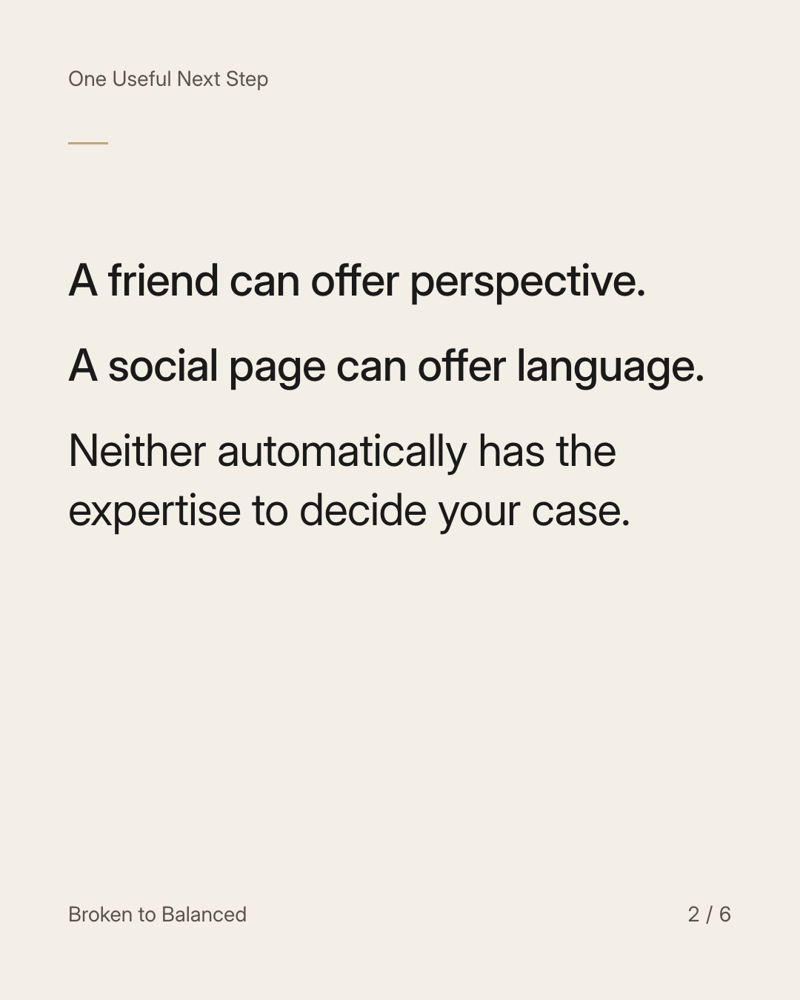
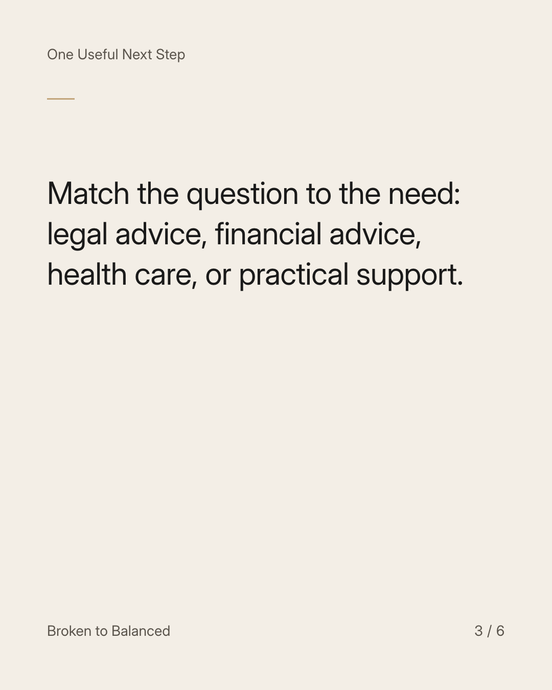
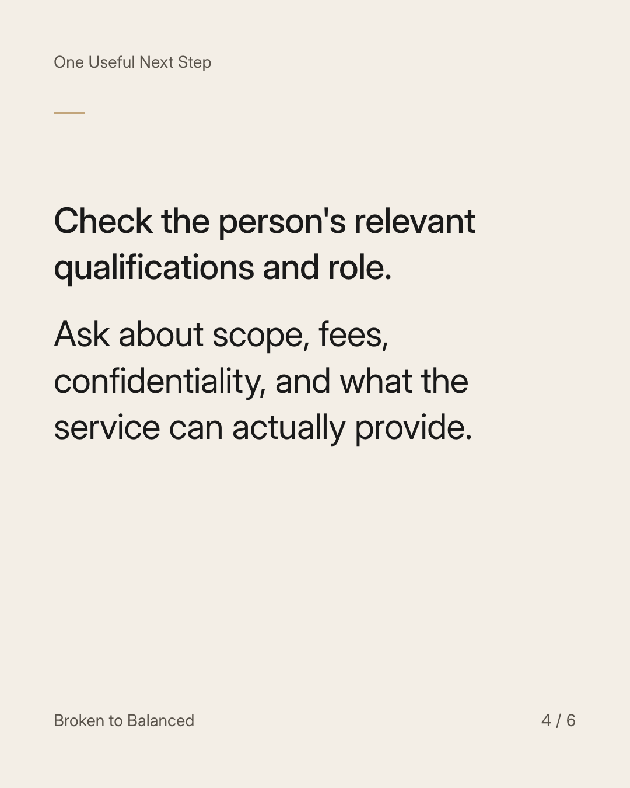
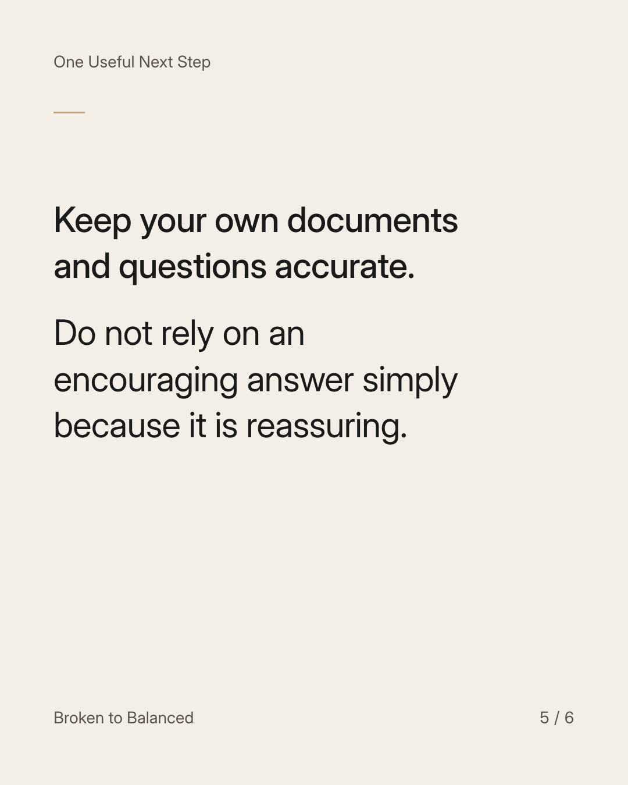
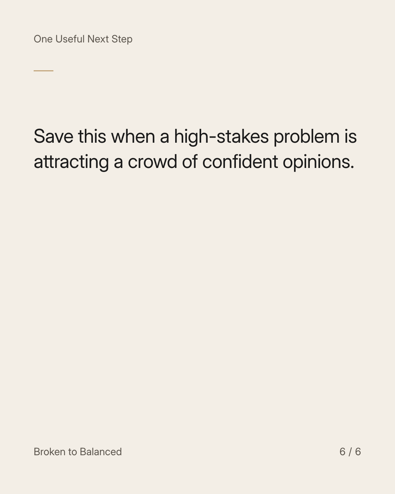

Exact text and accessibility text
Ask the right professional the right question.
Slide 1 of 6. Ask the right professional the right question.


Exact text and accessibility text
A friend can offer perspective. A social page can offer language. Neither automatically has the expertise to decide your case.
Slide 2 of 6. A friend can offer perspective. A social page can offer language. Neither automatically has the expertise to decide your case.


Exact text and accessibility text
Match the question to the need: legal advice, financial advice, health care, or practical support.
Slide 3 of 6. Match the question to the need: legal advice, financial advice, health care, or practical support.


Exact text and accessibility text
Check the person's relevant qualifications and role. Ask about scope, fees, confidentiality, and what the service can actually provide.
Slide 4 of 6. Check the person's relevant qualifications and role. Ask about scope, fees, confidentiality, and what the service can actually provide.


Exact text and accessibility text
Keep your own documents and questions accurate. Do not rely on an encouraging answer simply because it is reassuring.
Slide 5 of 6. Keep your own documents and questions accurate. Do not rely on an encouraging answer simply because it is reassuring.


Exact text and accessibility text
Save this when a high-stakes problem is attracting a crowd of confident opinions.
Slide 6 of 6. Save this when a high-stakes problem is attracting a crowd of confident opinions.
Exact caption
Plain-text fallback: select and copy the caption.